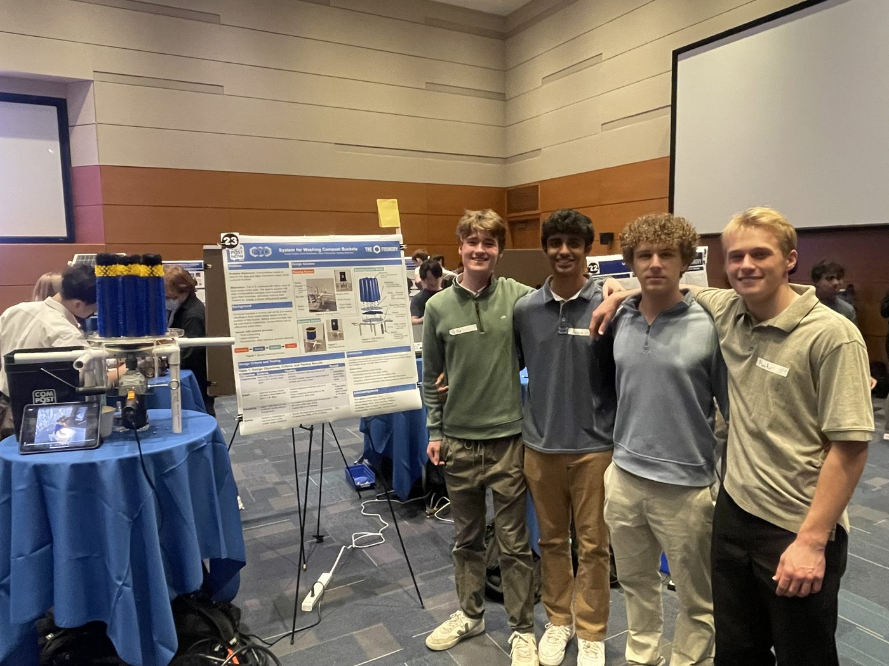
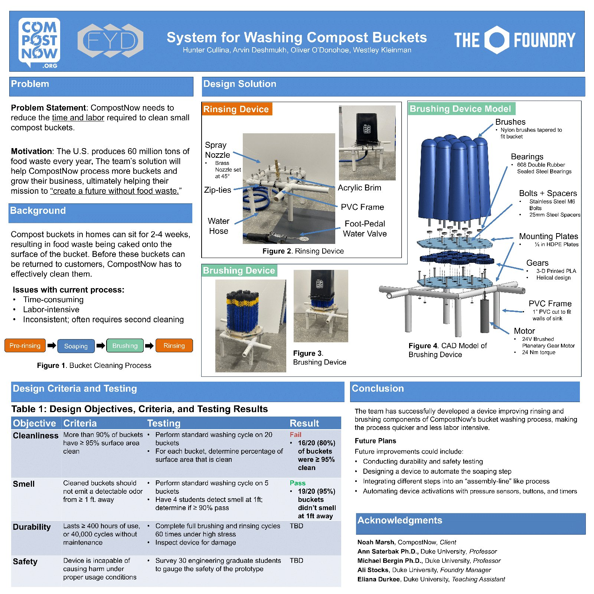

Bucket Washing System
EGR 101 Freshman Design · Lead Test Engineer · CompostNow · Fall 2024
Two-stage rinsing and brushing system for CompostNow, built by a four-person team. It cut cleaning time by 43% and took the job from four operators down to one, with 89% of tested buckets reaching 95% cleanliness.
Overview
EGR 101 freshman design project for CompostNow container cleaning, Fall 2024

Final project poster
Prototype demonstration
Problem & Design
Cut labor for cleaning buckets that sit 2-4 weeks with caked waste
Problem
CompostNow returns cleaned buckets to customers. Current washing was slow, labor-heavy, and often needed a second pass after food waste baked onto surfaces.
Design
Rinsing device - spray nozzles on a PVC frame with a foot-pedal water valve for a hands-free first pass. Brushing device - a 24V motor driving rotating brushes through 3D-printed PLA helical gears, with bearings and mounting plates to scrub remaining residue. Components were modeled in SolidWorks and fabricated by laser cutting and 3D printing.
Criteria
Targets: 95% clean buckets, no odor detectable from 3+ ft, durability for ~2,400 hours of use, and safe operation under intended use.
Testing
As lead test engineer, I ran structured cleanliness and odor testing across a 20-bucket sample to validate performance against each defined design criterion.
Team
Porter Collins, Arvin Deelchmuth, Oliver O'Donoghoe, and Westley Kleinman - with CompostNow as client and The Foundry as project partner.
Specs
Impact
Measured cleaning performance across a 20-bucket sample
Results
Across a 20-bucket sample, 89% of buckets reached 95% cleanliness and 95% passed a 3 ft odor check - meeting the primary client criteria for return-to-customer readiness. Overall the system cut cleaning time by 43% and reduced the operators required from four to one.
Design Takeaway
Splitting rinse and brush into two devices kept each station simple to build and operate while still hitting durability and safety targets for ~2,400 hours of intended use.